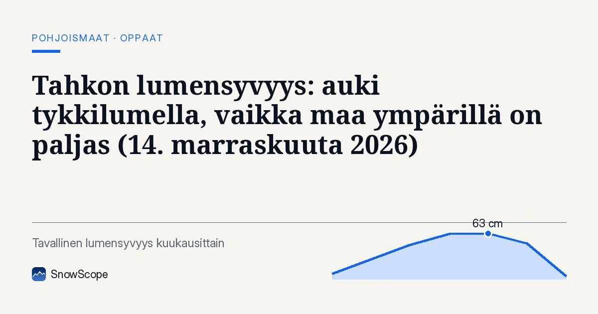

Tahkon lumensyvyys: auki tykkilumella, vaikka maa ympärillä on paljas (14. marraskuuta 2026)
Tahko aloitti kauden 13. marraskuuta kahdella hissillä ja avajaistapahtumalla 15. marraskuuta asti. Kaikki rinteen lumi on tekonlumea; piistejen ulkopuolinen maisema pysyy paljaana. Kauden alun olosuhteet ovat vaativat: luonnonlumi haipuu jatkuvasti, ja tämän viikon ennuste sekoittaa sadetta mihin tahansa laskevan pölyyn.
Katso kohteen Tahko lumiennuste reaaliajassa SnowScope-sovelluksessaLumensyvyys, puuterihälytykset ja 3D-kartta, ilmaiseksi.

Miksi Tahko voi avautua kun metsä on ruskea
12. marraskuuta Tahkon lähellä olevat mittausohjelmot kirjasivat uutta lunta: Kuopio Maaninka 4 cm, Rautavaara Ylä-Luosta 3 cm. 13. marraskuuta molemmat lukivat 0 cm. Tämä on kauden alun sykli. Lumi putoaa mutta sulaa nopeasti, koska maa on vielä lämmin ja ilma ei pysy riittävän kylmänä säilyttämään sitä.
Viimeisen seitsemän päivän aikana alueelle putosi noin 7 cm, mutta hyvin vähän jää maahan hallittujen rinteen ulkopuolella. Siksi Suomen hiihtokeskukset luottavat tekonlumen tekemiseen marraskuussa. Tahko rakentaa ensimmäiset rinteensä kylmissä öissä muuttamalla vettä ainoa luotettavaksi pohjaksi juuri nyt.

Mitä ensi seitsemän päivää tuo mukanaan
Ennuste osoittaa noin 8 cm pohjalla ja 7–8 cm huipulla ensi viikon aikana. Ongelma ei ole määrässä vaan sekoituksessa. Nollaraja sijaitsee noin 90 m korkeudessa, Tahkon pohjan 97 m alapuolella. Tämä tarkoittaa, että alempia rinnettä sataa sade ja ylempää märkä lumi.
Yli puolet vedesta pohialla voi tulla sateena; huipulla noin kolmannes. Tämä ei ole puuterin rakentava sää. Mikä tahansa putoava lumi tiivistyy nopeasti ja tiivistää, muuttuen kuorreksi jos se jäätyy yöllä tai muuttuen sohjoksi jos aurinko palaa.
Kuinka tämä vertautuu edellisiin marraskuihin
Tahkon historia kattaa 46 talvea. Tänään (14. marraskuuta) tyypillinen luonnonlumen syvyys on 6 cm. Marraskuun loppuun mennessä se kasvaa 15 cm:iin. Joulukuun puoliväliin mennessä se saavuttaa 25 cm. Nämä ovat mediaaneja: noin kahdeksassa talvessa yhdeksään, 14. marraskuuta ei ole lunta ollenkaan.
Viime talvi oli heikko. Se huipentui vain 42 cm:iin ja piti lunta 131 päivän ajan, kauan lyhyemmin kuin tyypillinen 182 lumipäivää. Tämä vuosi noudattaa samaa kauden alun niukkaa jaksoa, vaikka on vielä liian aikaista määritellä kautta.
Mitkä rinteen ovat avoinna nyt
Hiihtokeskuksen kotisivulla 13. marraskuuta listattiin 2 14 hissistä avoinna, palvelemassa kokonaan tekonlumella tehtyjä rinnettä. Laajeneminen riippuu kylmistä öistä—ja ennuste ei tarjoa monia. Sade kuvassa merkitsee, että lisää tekonlumen tekeminen on hidasta.
Tahkon avausrinteen ovat kovat ja sileitä päivän alussa, sitten pehmenevät jos iltapäivän lämpötilat nousevat yli 0 °C. Jos sade tulee, ne muuttuvat tahmeiksi. Metsäpolkuilla ja off-piste-alueilla ei ole pohjaa eikä ne ole turvallisia tällä viikolla.
Milloin olosuhteet voivat parantua
Sykli pitäisi muuttua marraskuun lopulla. 21. marraskuuta mennessä Tahkon historia osoittaa 10 cm tyypillisesti; 30. marraskuuta 15 cm. Maaliskuun puoliväliin on yleensä syvimmän kuukausi, mediaanisyvyys noin 63 cm. Se on vielä kuusi viikkoa poissa.
Avainasia on, johdataaako joulukuu jatkuvaa kylmyyttä. Jos se tekee, lumi kiinnittyy ja kasvaa. Toistaiseksi Tahkon avaus antaa kauden alun hiihläjille mahdollisuuden laskea tekonlumella silti pääosin paljaassa maisemassa.
Vinkkejä laskijoille
- Tuo terävät reunat ja virittele pohja ennen lähtöä. Tekonlumi on kovaa ja nopeaa kylmissä aamunkoitteissa, löysää lämpimissä iltapäivillä. Märkä lumi vaatii reunapitoa.
- Älä mene metsäpolkuille tai off-piste-alueelle tällä viikolla. Pohjaa ei ole. Kivet piiloutuvat minkä tahansa ohuiden luonnonlumen paikkien alla.
- Tarkista hiihtokeskuksen kotisivu aamulla sinä päivänä kun suunnittelet käyntiä. Avoimien hissien määrä muuttuu nopeasti kun tekonlumen tekeminen kilpailee sateen kanssa.
- Tuo vedenpitävät kerrokset. Sade pohialla ja märkä lumi keskijuurella merkitsevät, että kastut jos olet ulkona koko päivän.
- Jos laskut off-piste-alueella tulevien viikkojen aikana, tarkista virallisen lumivyöryennusteen EAWS:ltä (European Avalanche Warning Services) sivustolla avalanches.org, vaikka kauden alun vyöryt ovat harvinaisia Kainuussa.
Näistä luvuista
Hiihtokeskusten lumensyvyydet ovat syvin lumi keskuksen ylärinteillä näytettynä päivänä; ne ovat arvioita alueelle, eivät mittaus yhdessä pisteessä. Ennusteet voivat muuttua. Lue aina virallinen lumivyöryennuste ennen rinteiden ulkopuolelle lähtöä.
Viralliset lumivyöryennusteet: EAWS – European Avalanche Warning Services
Viittaa tähän raporttiin
Tutkimukseen, opetukseen tai mediaan: luvut ja kaaviot ovat vapaasti käytettävissä CC BY 4.0 -lisenssillä tällä lähdeviitteellä.
SnowScope (2026), Tahkon lumensyvyys: auki tykkilumella, vaikka maa ympärillä on paljas (14. marraskuuta 2026), https://snowscope.app/blog/fi/2026/11/tahko-snow-depth-14-november-2026.html, luettu 2026-11-14
SnowScope (Atlas Labs). (2026, November 14). Tahkon lumensyvyys: auki tykkilumella, vaikka maa ympärillä on paljas (14. marraskuuta 2026). SnowScope snow reports. https://snowscope.app/blog/fi/2026/11/tahko-snow-depth-14-november-2026.html
BibTeX
@misc{snowscope2026tahkosnowdepth14november,
author = {{SnowScope (Atlas Labs)}},
title = {Tahkon lumensyvyys: auki tykkilumella, vaikka maa ympärillä on paljas (14. marraskuuta 2026)},
year = {2026},
month = nov,
howpublished = {\url{https://snowscope.app/blog/fi/2026/11/tahko-snow-depth-14-november-2026.html}},
note = {Published 2026-11-14 20:11 UTC; accessed 2026-11-14}
}· CC BY 4.0 · Menetelmät, data ja työkalut →
Tahko: lumi ja lämpötila korkeuden mukaan, tämä talvi ja viime talvi (työkalut) →
Seuraa: Tahko
Ilmainen: viesti, kun uutta lunta on tulossa, ja ennuste joka aamu.